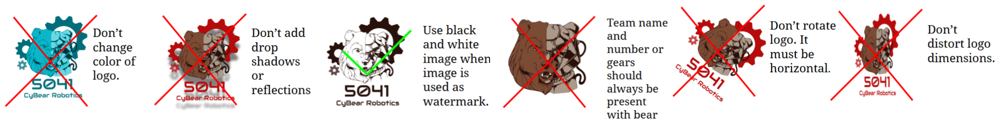

Good media shows students and families that there are many ways to belong: build, code, drive, scout, design, mentor FLL, fundraise, and create.
Sponsors need to see impact: students learning, community events, robots in action, and the way support becomes opportunity.
Photos, clips, quotes, and notes become evidence for Impact work, annual reports, outreach records, and future training.
Key idea: Media is not just decoration. It is documentation, storytelling, and community connection.
0 of 8 media roles revealed.
Media should make 5041 look welcoming, student-centered, professional, and connected to FIRST values.
Show different students, roles, programs, and ways to contribute.
Feature learning, practice, teamwork, and growth, not only finished trophies or robots.
Use clean layouts, accurate text, strong images, and respectful language.
#980000
#000000
#666666
#F3F3F3
#ffffff
Use red and black for accents, structure, logos, and important focus areas. Use white and light gray as backgrounds so the main colors stand out.

Use FIRST program logos and season graphics from FIRST, not random search results or recreated versions.
Write program names carefully, such as FIRST Robotics Competition, FIRST Tech Challenge, and FIRST LEGO League.
Use official season downloads, social templates, wallpapers, and recruitment posters when building posts or flyers.
When combining 5041 and FIRST assets, both brands should remain clear, readable, and undistorted.
You are making a FTC recruitment post with the 5041 logo and a FIRST Tech Challenge logo. What is the best approach?
Choose one answer.
Do not block walkways, pits, robot carts, drive team, field staff, or tool users to get a shot.
Think carefully before posting names, faces, locations, travel details, or private conversations.
When content involves sensitive situations, minors, sponsors, partners, or school issues, ask a mentor before posting.
You took a great close-up photo of a younger student at a Girl Scout robotics camp. The caption draft includes her full name, school, and troop number.
Choose one answer.
Set goals, shot list, roles, hashtags, sponsor mentions, and approval plan.
Capture action, faces, teamwork, details, quotes, results, and behind-the-scenes moments.
Select the best assets, write captions, check permissions, post, archive, and thank partners.
Every event should produce both immediate posts and useful long-term evidence for awards, recruitment, and annual reports.
Students teaching, asking questions, presenting, mentoring, and celebrating.
Prototypes, CAD, wiring, fabrication, code, testing, and repairs.
FLL, FTC, outreach camps, sponsor visits, community events, and recruitment.
Competition milestones, robot performance, awards, lessons learned, and next steps.
Check before close-up photos, sensitive captions, or sponsor claims.
Notice who is learning, helping, problem-solving, and including others.
Save files so future award, outreach, and recruitment work is easier.
Review analytics and feedback, then make the next post or graphic better.
Explain what happened, why it matters, and who helped make it possible.
Avoid too much jargon; explain acronyms when families, sponsors, or younger students may read it.
Tell people what to do next: join, sponsor, attend, volunteer, donate, or learn more.
Show how funding becomes materials, tools, travel, training, outreach, and student opportunity. Thank sponsors accurately and avoid promising benefits not approved by the team.
Capture teaching, hands-on learning, teamwork, and community connection. Include the purpose of the event and how families or students can get involved.
Combination events can fundraise, recruit, and document impact at the same time when media students plan ahead.
Use a consistent pattern like 2027-01-16_iowa-regional or 2026-10-05_girl-scout-camp.
Rename important assets with event, subject, and use case, such as 2027-regionals_drive-team-match-42.jpg.
Record who is pictured, what happened, sponsor details, permissions, quotes, and post links.
“Robotics thing went good today. Thanks everyone!!!”
“5041 students helped local Girl Scouts build and program robots during a hands-on STEM camp. Thank you to our student mentors and families for helping more students see that STEM has a place for everyone.”
Stronger posts identify the event, explain the impact, thank people specifically, and connect back to the team mission.
“Thanks to our sponsor for helping us this year!”
“Thank you to [Sponsor Name] for supporting 5041 CyBear Robotics this season. Your support helps students access robot parts, tools, travel, and hands-on STEM learning opportunities.”
Stronger sponsor posts name the sponsor, explain what their support makes possible, and connect the donation to student impact.
“Join robotics. We build robots.”
“Interested in building, coding, designing, driving, media, outreach, or teamwork? 5041 CyBear Robotics welcomes students with many different interests and experience levels. Everyone has a place here.”
Stronger recruitment posts show multiple ways to participate, reduce intimidation, and invite students who may not already see themselves as “robotics people.”
0 of 8 items reviewed.
Please enter your name before starting the quiz.
This name will appear on your completion certificate.
What is the main purpose of team media?
Which 5041 color should be used as a main accent color?
Which logo practice is best?
What should you do before posting a close-up image of a minor with identifying details?
Which is a good shot-list category?
What makes a strong sponsor post?
Why should media students organize files?
Which accessibility practice is best for images?
Which accessibility practice is best for videos with speech?
Which post caption is stronger?
What should happen when content involves sensitive student or school issues?
What should FIRST program logos come from?
Why should media include different team roles?
Which is a good event media workflow?
What should you avoid in 5041 layouts?
What is a good call to action?
What is a good way to treat images of flyers on social media?
What should media students do at a busy competition?
Why are quotes and short interviews useful?
What is the best summary of this module?
You need at least 18 out of 20 to unlock the completion certificate.
Not submitted.
After passing, advance to the final completion certificate.
5041 CyBear Robotics
Presented to
for successfully completing the
Complete after passing the required quiz.
Represent the team with accuracy, access, safety, and style.